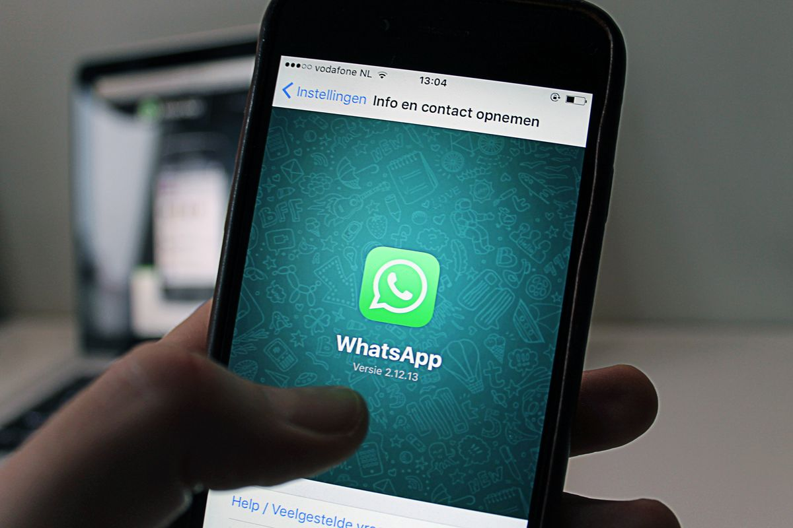
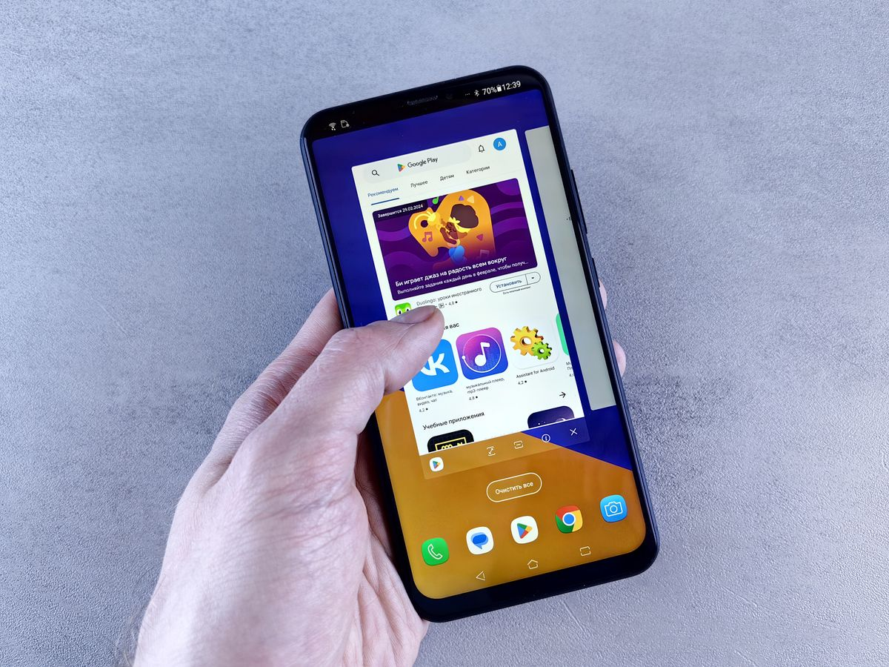

Chat WhatsApp tidak sengaja terhapus itu rasanya panik. Apalagi kalau yang hilang berisi alamat, nomor penting, atau bukti transfer. Tenang dulu. Chat yang terhapus masih bisa kembali, asal kamu tahu caranya. Artikel ini menjelaskan langkahnya untuk HP Android dan iPhone, per Oktober 2026.
Syarat utamanya: kamu harus punya backup
Hal pertama yang perlu kamu pahami: WhatsApp tidak menyimpan salinan chat kamu di servernya. Semua pesan terenkripsi ujung ke ujung, jadi begitu chat terhapus dan tidak ada backup, tidak ada jalan resmi untuk mengembalikannya.
Artinya, chat yang terhapus hanya bisa kembali lewat satu pintu: file backup yang pernah kamu buat. Di HP Android, backup WhatsApp tersimpan di Google Drive memakai akun Google kamu. Di iPhone, backup tersimpan di iCloud. Kalau kamu tidak pernah mengaktifkan cadangan, sayangnya chat yang hilang tidak bisa kembali.

Cek dulu kapan backup terakhir dibuat
Sebelum melakukan apa pun, cek kapan terakhir kali WhatsApp mencadangkan chat kamu. Ini menentukan chat sampai tanggal berapa yang bisa kembali.
- Buka aplikasi WhatsApp di HP kamu.
- Ketuk ikon tiga titik di sudut kanan atas (Android) atau masuk ke menu Setelan (iPhone).
- Pilih Setelan, lalu masuk ke menu Chat.
- Ketuk Cadangan chat. Di layar ini kamu bisa melihat tanggal dan waktu backup terakhir.
Catat tanggalnya. Pesan yang masuk atau terhapus setelah tanggal itu tidak ada di dalam backup. Jadi kalau backup terakhirmu dua hari lalu, yang bisa kembali hanya chat sampai dua hari lalu.
Cara mengembalikan chat WhatsApp di HP Android
Kalau backup kamu ada di Google Drive, langkah pemulihannya seperti ini.
- Pastikan kamu masih memakai nomor telepon yang sama dan sudah login ke akun Google yang sama dengan yang dipakai saat backup dibuat. Ini syarat mutlak, tidak bisa diganti.
- Ingat, proses ini mengembalikan chat ke kondisi saat backup dibuat, jadi pesan baru yang masuk setelah tanggal backup tidak ikut kembali. Jangan hapus aplikasi sebelum kamu memastikan cadangan benar-benar ada.
- Hapus aplikasi WhatsApp dari HP kamu, lalu pasang ulang dari Play Store.
- Buka WhatsApp dan verifikasi nomor telepon kamu seperti biasa.
- Saat WhatsApp menemukan backup di Google Drive, layar akan menawarkan opsi Pulihkan. Ketuk Pulihkan dan tunggu sampai prosesnya selesai.
Setelah selesai, chat kamu akan muncul kembali sesuai isi backup terakhir. Proses ini butuh koneksi internet yang stabil, terutama kalau ukuran backupnya besar.

Cara mengembalikan chat WhatsApp di iPhone
Prinsipnya sama, bedanya jalur backupnya memakai iCloud.
- Pastikan kamu login dengan Apple ID yang sama dengan yang dipakai saat backup dibuat, dan iCloud Drive aktif.
- Cek dulu di WhatsApp, menu Setelan, Chat, lalu Cadangan chat untuk memastikan backup iCloud tersedia.
- Hapus aplikasi WhatsApp, lalu pasang ulang dari App Store.
- Buka WhatsApp dan verifikasi nomor telepon kamu.
- Saat muncul pilihan Pulihkan Riwayat Chat, ketuk dan tunggu prosesnya selesai.
Satu hal yang perlu kamu ingat: backup Google Drive tidak bisa dipakai di iPhone, dan backup iCloud tidak bisa dipakai di Android. Kalau kamu pindah platform, perlu proses migrasi resmi yang dijalankan sebelum WhatsApp diaktifkan di HP baru.
Jalan cadangan: file backup lokal di Android
Khusus pengguna Android, ada satu jalan cadangan. Selain ke Google Drive, WhatsApp juga menyimpan backup di memori internal HP, tepatnya di folder WhatsApp lalu Databases. Filenya bernama msgstore.db.crypt dengan angka di belakangnya.
Cara ini berguna kalau backup Google Drive gagal atau tidak tersedia, tapi tetap butuh file cadangan yang dibuat sebelum chat terhapus. Karena letaknya di HP yang sama, cara ini tidak menolong kalau HP kamu hilang atau rusak total. Itu sebabnya backup cloud tetap yang paling aman.
Yang tidak bisa dikembalikan dan cara mencegahnya
Ada dua hal yang tidak bisa dikembalikan dengan cara apa pun. Pertama, pesan yang dihapus memakai fitur Hapus untuk semua orang. Pesan itu hilang dari kedua belah pihak dan tidak masuk hitungan backup. Kedua, chat yang tidak pernah masuk backup. Kalau lawan bicaramu masih menyimpan salinannya, kamu bisa minta dia mengirim ulang pesan atau file yang kamu butuhkan.
Agar kejadian ini tidak terulang, aktifkan cadangan otomatis sekarang juga. Masuk ke Setelan, Chat, Cadangan chat, lalu pilih frekuensi harian. Untuk Android, pilih cadangkan ke akun Google kamu. Untuk iPhone, pastikan cadangan otomatis iCloud aktif. Backup harian membuat jarak kehilanganmu paling lama hanya satu hari.
Terakhir dan ini penting: jangan pernah memberikan kode verifikasi enam digit WhatsApp ke siapa pun. Pemulihan yang sah hanya lewat backup resmi di Google Drive atau iCloud. Kalau ada aplikasi atau orang yang menawarkan mengembalikan chat asal kamu kasih kode itu, berhenti dan hapus. Kode itu bisa dipakai mengambil alih akunmu.
Penutup
Intinya sederhana: chat WhatsApp yang terhapus bisa kembali selama kamu punya backup, entah di Google Drive untuk Android atau iCloud untuk iPhone. Kuncinya ada di tiga langkah: cek tanggal backup terakhir, pasang ulang WhatsApp dengan nomor dan akun yang sama, lalu ketuk Pulihkan. Setelah ini selesai, nyalakan cadangan otomatis harian supaya kamu tidak panik lagi di kemudian hari.
Sumber dan Info Resmi
Fakta dan detail di artikel ini merujuk ke sumber berikut, yang sudah diverifikasi isinya:
- Lilach Bullock: Cara Mengembalikan Chat WA yang Terhapus: chat hanya bisa kembali bila ada backup; pesan tidak disimpan di server karena enkripsi ujung ke ujung; langkah cek backup dan ketuk Pulihkan; pesan yang dihapus lewat "Hapus untuk semua orang" tidak bisa dikembalikan; kode verifikasi 6 digit tidak boleh diberikan ke siapa pun.
- Portal Harian: Cara Mengembalikan Chat WhatsApp yang Terhapus: Android memakai akun Google, iPhone memakai iCloud; nomor telepon dan akun harus sama dengan saat backup dibuat; jangan hapus aplikasi sebelum memastikan cadangan tersedia karena pesan baru yang belum masuk cadangan bisa ikut hilang.
- Ponsel Pintar: Cara Kembalikan Chat WA yang Terhapus: jalur Google Drive untuk Android, iCloud untuk iPhone; cadangan lokal Android di File Manager, WhatsApp, Databases dengan file msgstore.db.crypt; minta ulang chat dari lawan bicara untuk pesan yang tidak ikut backup.
- Unitag Store: Cara Mengembalikan Chat WhatsApp yang Terhapus di Android: backup Google Drive adalah cara paling umum di Android; backup lokal tersimpan sebagai file msgstore.db.crypt; ganti HP dengan nomor dan akun yang sama bisa memulihkan chat penuh.
- Robots.net: WhatsApp Backup and Restore Chats: WhatsApp tidak menyimpan riwayat chat di servernya, satu-satunya salinan yang bertahan adalah backup buatan pengguna; backup Google Drive tidak bisa dipakai di iPhone dan sebaliknya.